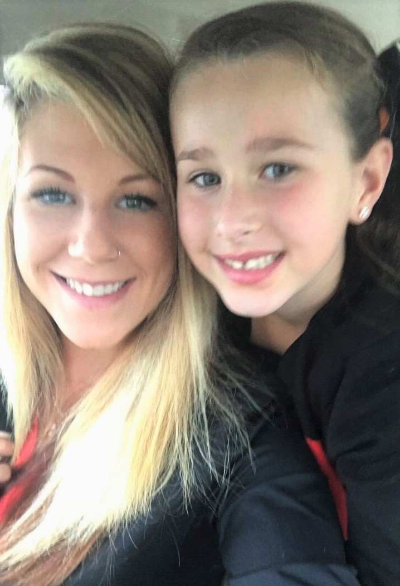

My Family



1 mom and dad. 2 grandma and grandpas. 3 aunts. A double handful of fur babies. I’ve got a lot of people in my family. Whether we are eating dinner, playing outside, or watching Trolls, I love all the time I get to spend with them.